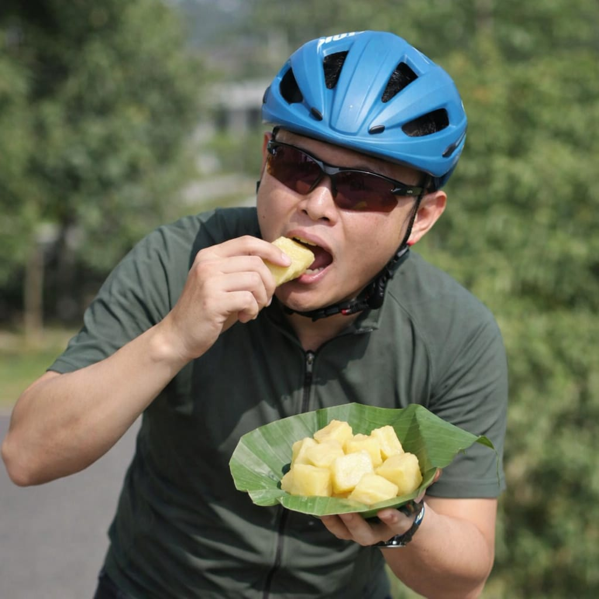
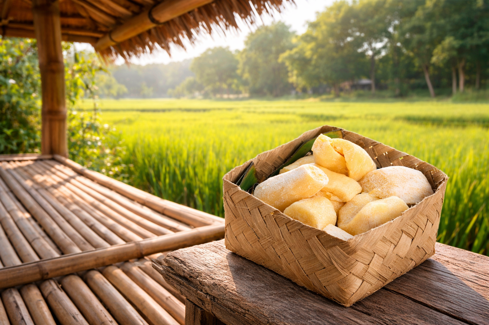

Tape singkong adalah makanan tradisional Indonesia hasil fermentasi umbi singkong yang dikupas, dikukus, dan diragi (biasanya menggunakan Saccharomyces cerevisiae) selama 2-3 hari.
Learn more
Proyek ini bertujuan untuk mempelajari bioteknologi konvensional melalui pembuatan tape singkong. Tape singkong dibuat dengan memanfaatkan proses fermentasi yang melibatkan mikroorganisme dari ragi. Dalam proyek ini dilakukan beberapa tahap seperti fermentasi bahan dan pengeringan hingga menghasilkan tape singkong. Melalui proyek ini dapat dipahami bagaimana proses fermentasi dimanfaatkan untuk menghasilkan produk makanan yang bermanfaat.
Bahan: Singkong Mentega, Singkong Merah, Ragi Tape, Air, Daun Pisang,
Alat: Kompor, Pisau, Talenan, Wadah, Alat kukus, Garpu, Sendok, Bungkus Plastik, Tutup Panci, Sarung Tangan Plastik,
Langkah-langkah:
